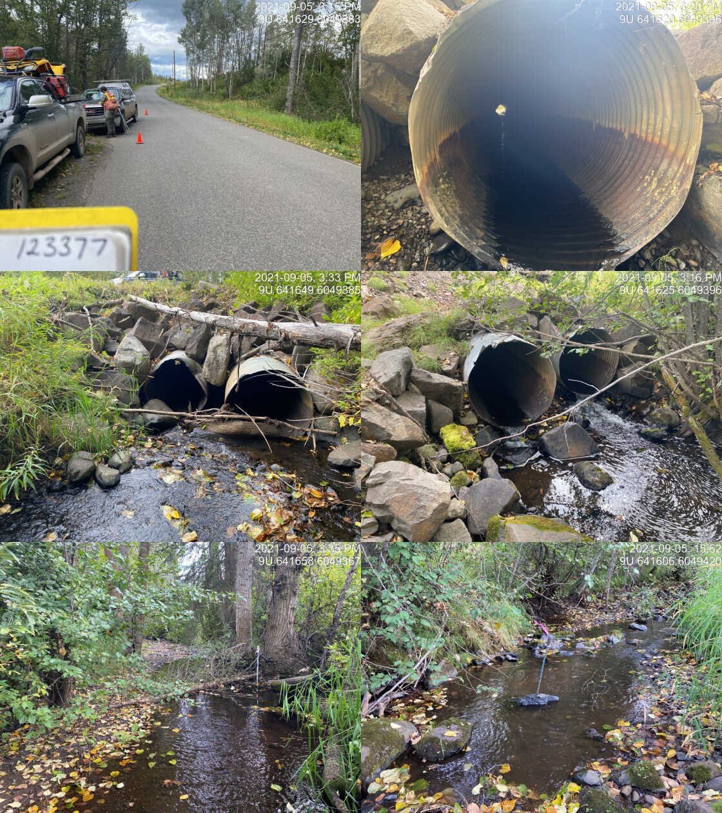

Thompson Creek - 198066 & 123377 - Appendix
Site Location
PSCIS crossing 198066 and 123377 are located on Thompson Creek midway between Telkwa and Houston. PSCIS crossing 198066 is located on a small private road and 123377 is located on Walcott Road. Crossing 198066 was located 0.1km upstream from the confluence with a side channel of the Bulkley River and 123377 was located 2.4km upstream of the confluence. Crossing 198066 was on private land owned by Jeremy Rouw and hay fields as well as other infrastructure that was part of Udder View Dairy were located upstream of the crossing. Crossing 123377 is the responsibility of the Ministry of Transportation and Infrastructure.
Background
At crossing 198066, Thompson Creek is a fourth order stream with a watershed area upstream of the crossing of approximately 43.1km2. The elevation of the watershed ranges from a maximum of 1623m to 596m near the crossing (Table 5.74). Upstream of crossing 198066, cutthroat trout, coastal cutthroat trout, coho salmon, rainbow trout, and dolly varden have previously been recorded (MoE 2020b; Norris 2020).
Landowners adjacent to the stream at both crossings as well as regional DFO staff report that Thompson Creek was historically redirected from its original channel on the height of land near the Bulkley River in the 1960s. The historic channel is visible in aerial imagery and would have directed flows in a north-eastern direction from where the agricultural fields meet the Thompson creek valley. The redirection diverts the channel into two seperate channels that flow south-east. The main flow of the channel was flowing in an excavated trench through the hay field at the time of the survey. The distance from the current confluence with the Bulkley River side channel to the historic valley is approximately 370m. The distance the stream would have traveled historically in a north-eastern direction is estimated at 1300m. The landowner reported that conceptually they would like to see the stream redirected to its historic channel. They noted that stranding has been observed within the excavated channel and a realignment would help prevent the loss of hay production caused by the high water table adjacent to the excavated channel. A map of the current man made channels and the historic channel is provided in Figure ??. Adjacent landowners also report that the crossing at Walcott Road had nearly washed out at the road due to high flows related to beaver dam failures. Crossing 123378 has been recorded as a bridge on Thompson Creek on the BC Hydro powerline between 198066 and 123377 (Gollner and Cain 2014). Landowners report this bridge washed out at the time of the beaver dam failure and was replaced in 2020.
fpr::fpr_table_wshd_sum(site_id = my_site) %>%
fpr::fpr_kable(caption_text = paste0('Summary of derived upstream watershed statistics for PSCIS crossing ', my_site, '.'),
footnote_text = 'Elev P60 = Elevation at which 60% of the watershed area is above',
scroll = F)| Site | Area Km | Elev Site | Elev Min | Elev Max | Elev Median | Elev P60 | Aspect |
|---|---|---|---|---|---|---|---|
| 198066 | 43.1 | 548 | 596 | 1623 | 832 | 802 | WSW |
| * Elev P60 = Elevation at which 60% of the watershed area is above |
knitr::include_graphics("fig/thompson.png")
G. Tamblyn and Jessop (2000) have documented detailed fish habitat, riparian and channel assessment data for Reach 1 and 2 of the stream surveying 12.6km along with an impact synopsis and restoration suggestions.
PSCIS stream crossing 123377 was ranked as a high priority for follow up by Irvine (2018) and Smith (2018) because of the relatively large size of the stream and habitat rated as high value in PSCIS (Table 5.75. A map of the watershed is provided in map attachment 093L.113.
fpr::fpr_table_bcfp(scroll = gitbook_on) | Habitat | Potential | Remediation Gain | Remediation Gain (%) |
|---|---|---|---|
| ST Network (km) | 35.9 | 2.4 | 7 |
| ST Lake Reservoir (ha) | 12.6 | 0.0 | 0 |
| ST Wetland (ha) | 24.6 | 0.0 | 0 |
| ST Slopeclass03 Waterbodies (km) | 1.9 | 0.0 | 0 |
| ST Slopeclass03 (km) | 12.1 | 1.6 | 13 |
| ST Slopeclass05 (km) | 4.8 | 0.8 | 17 |
| ST Slopeclass08 (km) | 7.6 | 0.0 | 0 |
| ST Spawning (km) | 4.9 | 0.0 | 0 |
| ST Rearing (km) | 15.4 | 2.4 | 16 |
| CH Spawning (km) | 4.9 | 0.0 | 0 |
| CH Rearing (km) | 12.7 | 2.4 | 19 |
| CO Spawning (km) | 9.7 | 2.4 | 25 |
| CO Rearing (km) | 14.7 | 2.4 | 16 |
| CO Rearing (ha) | 12.3 | 0.0 | 0 |
| SK Spawning (km) | 0.0 | 0.0 | – |
| SK Rearing (km) | 0.0 | 0.0 | – |
| SK Rearing (ha) | – | 0.0 | – |
| All Spawning (km) | 9.7 | 2.4 | 25 |
| All Rearing (km) | 16.7 | 2.4 | 14 |
| All Spawning Rearing (km) | 16.7 | 2.4 | 14 |
| * Model data is preliminary and subject to adjustments. |
Stream Characteristics at Crossing
At the time of the survey, PSCIS crossing 198066 was un-embedded, non-backwatered and ranked as a potential barrier to upstream fish passage according to the provincial protocol (MoE 2011b). There was rip rap placed around the culvert inlets and outlets (Table 5.76). Water temperature was 13\(^\circ\)C, pH was 8.2 and conductivity was 294uS/cm.
fpr::fpr_table_cv_summary_memo()| Location and Stream Data |
|
Crossing Characteristics | – |
|---|---|---|---|
| Date | 2021-09-12 | Crossing Sub Type | Round Culvert |
| PSCIS ID | 198066 | Diameter (m) | 1.3 |
| External ID | – | Length (m) | 6 |
| Crew | AI | Embedded | No |
| UTM Zone | 9 | Depth Embedded (m) | – |
| Easting | 640243.9 | Resemble Channel | No |
| Northing | 6048061 | Backwatered | Yes |
| Stream | Thompson Creek | Percent Backwatered | 95 |
| Road | Private Road | Fill Depth (m) | 0.2 |
| Road Tenure | Unclassified | Outlet Drop (m) | 0 |
| Channel Width (m) | 2.77 | Outlet Pool Depth (m) | 0.1 |
| Stream Slope (%) | 0.5 | Inlet Drop | No |
| Beaver Activity | No | Slope (%) | 0.4 |
| Habitat Value | High | Valley Fill | Deep Fill |
| Final score | 16 | Barrier Result | Potential |
| Fix type | Replace with New Open Bottom Structure | Fix Span / Diameter | 10 |
Photos: From top left clockwise: Road/Site Card, Barrel, Outlet, Downstream, Upstream, Inlet.
|
|||
| Comments: Udder View Farm. Curently appears passable for all life stages and species but may present slight barrier at time of year when flow are high. Large outlet pool indicates that culvert is undersized. Landowners adjacent to the stream report that the channel was historically relocated through the fields near the river and they would like to work together to relocate. 16:48 |
fpr::fpr_table_cv_summary_memo(site = my_site2, site_photo_id = my_site2)| Location and Stream Data |
|
Crossing Characteristics | – |
|---|---|---|---|
| Date | 2021-09-05 | Crossing Sub Type | Round Culvert |
| PSCIS ID | 123377 | Diameter (m) | 1.05 |
| External ID | – | Length (m) | 29 |
| Crew | AI | Embedded | No |
| UTM Zone | 9 | Depth Embedded (m) | – |
| Easting | 641632.6 | Resemble Channel | No |
| Northing | 6049398 | Backwatered | No |
| Stream | Thompson Creek | Percent Backwatered | – |
| Road | Walcott Road | Fill Depth (m) | 1.5 |
| Road Tenure | MoTi Local | Outlet Drop (m) | 0.25 |
| Channel Width (m) | 4.8 | Outlet Pool Depth (m) | 0.3 |
| Stream Slope (%) | 2.7 | Inlet Drop | No |
| Beaver Activity | No | Slope (%) | 3 |
| Habitat Value | High | Valley Fill | Deep Fill |
| Final score | 34 | Barrier Result | Barrier |
| Fix type | Replace with New Open Bottom Structure | Fix Span / Diameter | 10 |
| Photos: From top left clockwise: Road/Site Card, Barrel, Outlet, Downstream, Upstream, Inlet. | |||
| Comments: Debris is partially blocking one of the two pipes. Historic washouts on road at this site. Landowner reports stream diverted downstream >50 years ago and crosses farmers field in ditched channel. 15:12 |
##this is useful to get some comments for the report
hab_site %>% filter(site == my_site & location == 'ds') %>% pull(comments)
my_priority <- my_priority_info()Stream Characteristics Downstream
The stream was surveyed downstream from the culvert for 100m (Figures 5.89 - 5.90). Total cover amount was rated as with overhanging vegetation dominant. Cover was also present as (Table 5.78). The average channel width was 3.3m, the average wetted width was 2.5m and the average gradient was 1.8%. The dominant substrate was gravels with fines subdominant. The habitat was rated as medium value for salmonid rearing and spawning.
Stream Characteristics Upstream of 198066 and downstream of 123377
The stream was surveyed immediately upstream from 198066 for approximately 350m (Figures 5.91 - 5.92). Within the area surveyed, total cover amount was rated as with undercut banks dominant. Cover was also present as deep pools and overhanging vegetation (Table 5.78). The average channel width was 2.8m, the average wetted width was 2.1m and the average gradient was 0.5%. The dominant substrate was NA with NA subdominant. Habitat value was rated as medium value for resident salmonid rearing and spawning.
Structure Remediation and Cost Estimate
Should restoration/maintenance activities proceed at the site, replacement of PSCIS crossing 198066 with a bridge (10m span) is recommended.
# The cost of the work is estimated at \$`r format(my_cost_estimate() %>% pull(cost_est_1000s) * 1000, big.mark = ',')` for a cost benefit of `r as.character(my_cost_estimate() %>% pull(cost_net))` linear m/\$1000 and `r as.character(my_cost_estimate() %>% pull(cost_area_net))`m^2^/\$1000. Conclusion
There was14.7km of habitat modelled upstream of crossing 198066 rated as medium value for salmonid rearing and spawning. Crossing 198066 was ranked as a high priority for proceeding to design for replacement.
There was 12.3km of habitat upstream of crossing 123377 rated as high value for salmonid rearing and spawning. Crossing 123377 was ranked as a high priority for proceeding to design for replacement.
Restoration suggestions by G. Tamblyn and Jessop (2000) can be considered still relevant for Thompson Creek and include working with landowners to limit cattle access to the riparian zone, re-establishing riparian vegetation, improving cattle crossings and fish passage at roads. Additionally, the redirection of the stream back into it’s historic channel on the north side of the agricultural field near the confluence with the Bulkley River provides an extraordinary opportunity for sizable fish habitat gains in a currently very severely impacted section of stream.
tab_hab_summary %>%
filter(Site == my_site |
Site == my_site2) %>%
# select(-Site) %>%
fpr::fpr_kable(caption_text = paste0('Summary of habitat details for PSCIS crossing ', my_site, ' and ', my_site2, '.'),
scroll = F) | Site | Location | Length Surveyed (m) | Channel Width (m) | Wetted Width (m) | Pool Depth (m) | Gradient (%) | Total Cover | Habitat Value |
|---|---|---|---|---|---|---|---|---|
| 123377 | Downstream | 484 | 4.3 | 2.7 | 0.3 | 2.9 | abundant | high |
| 123377 | Upstream | 450 | 4.8 | 3.4 | 0.7 | 2.7 | abundant | high |
| 198066 | Downstream | 100 | 3.3 | 2.5 | – | 1.8 | moderate | medium |
| 198066 | Upstream | 350 | 2.8 | 2.1 | – | 0.5 | – | medium |
my_photo1 = fpr::fpr_photo_pull_by_str(str_to_pull = '_d1_')
my_caption1 = paste0('Typical habitat downstream of PSCIS crossing ', my_site, '.')
# fpr::fpr_photo_flip(site_id = 1802488, str_to_pull = '6257')grid::grid.raster(jpeg::readJPEG(my_photo1))Figure 5.89: Typical habitat downstream of PSCIS crossing 198066.
my_photo2 = fpr::fpr_photo_pull_by_str(str_to_pull = '_d2_')
my_caption2 = paste0('Habitat on side channel of Bulkley River downstream of crossing ', my_site, '.')grid::grid.raster(jpeg::readJPEG(my_photo2))Figure 5.90: Habitat on side channel of Bulkley River downstream of crossing 198066.
my_caption <- paste0('Left: ', my_caption1, ' Right: ', my_caption2)
knitr::include_graphics(my_photo1)
knitr::include_graphics("fig/pixel.png")
knitr::include_graphics(my_photo2)my_photo1 = fpr::fpr_photo_pull_by_str(str_to_pull = '_u1_')
my_caption1 = paste0('Small drop (50cm high) located ~20m upstream of PSCIS crossing ', my_site, '.')grid::grid.raster(jpeg::readJPEG(my_photo1))Figure 5.91: Small drop (50cm high) located ~20m upstream of PSCIS crossing 198066.
my_photo2 = fpr::fpr_photo_pull_by_str(str_to_pull = '_u2_')
my_caption2 = paste0('Habitat immediately upstream of PSCIS crossing ', my_site, ' that flows through a hay field within an excavated trench for approximately 350m.')grid::grid.raster(jpeg::readJPEG(my_photo2))Figure 5.92: Habitat immediately upstream of PSCIS crossing 198066 that flows through a hay field within an excavated trench for approximately 350m.
my_caption <- paste0('Left: ', my_caption1, ' Right: ', my_caption2)
knitr::include_graphics(my_photo1)
knitr::include_graphics("fig/pixel.png")
knitr::include_graphics(my_photo2)